Front Door Reassembly |
| 1. Apply Body Grease |
Apply body grease to the sliding parts of the front door window regulator RH, front door outside handle frame RH and front door lock assembly RH.
| 2. Precautions for Applying Blackout Tape |
Application Temperature
When the ambient temperature is low (15°C or less), use an infrared lamp to warm the base (body application surface) and blackout tape to 20-30°C before performing the work. Also, when the temperature is high (35°C or more), cool them to 35°C or less before performing the work.
Work Before Application
If paint nibs, dust, etc. adhere to the base (body application surface), air will be trapped when the blackout tape is pressed on, causing poor appearance; therefore, remove paint nibs and also remove dust from the base, the area around the base and the blackout tape.
Handling Blackout Tape
Blackout tape deforms easily, so sandwich it between pieces of cardboard, etc. and store it in a dry, flat place.
Tips for Applying Blackout Tape (Squeegee Operation and Application Method - General Areas)
 |
To prevent air bubbles, lightly lift the part not being pressed by the squeegee so that it does not contact the base, tilt the squeegee at 40-50° (push direction) or 30-45° (pull direction), and press the tape on by pushing air outward at a slow, constant speed of 3-7cm/second with a pressing force of 20-30N{2-3kgf}.
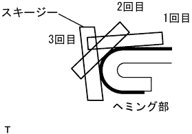 |
Tips for Applying Blackout Tape (Squeegee Operation and Application Method - Hemmed Areas)
For areas that cannot be pressed with the squeegee at one time, press them on in several steps. In particular, for small radii at hemmed areas, gradually adhere the tape in 2-3 steps using your finger or the thick end of the squeegee.
Tips for Applying Blackout Tape (Squeegee Operation and Application Method - Corners)
At corners, after peeling off the release paper, carefully adhere the tape with your fingertips.
To prevent poor appearance due to sharp tape corners, heat the blackout tape with a dryer before folding in each corner, and then fold in and adhere the corners in order.
Inspection After Application
If poor appearance occurs after application is complete, reapply using new blackout tape.
| 3. Install Blackout Tape NO.2 RH |
Clean Adhesive Surface (When Using Infrared Lamp)
Warm the blackout tape and adhesive remaining on the body with an infrared lamp.
Using a shop rag, etc., scrape off the blackout tape and adhesive remaining on the body.
Clean the adhesive surface with white gasoline.
Clean Adhesive Surface (When Using Tape Removal Disc)
Set 8 discs in the holder, and install the removal disc to an air drill or electric drill.
Using the removal disc, scrape off the blackout tape and adhesive remaining on the body.
Clean the bonding surface with white gasoline.
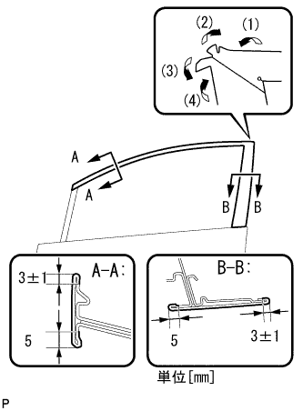 |
Apply new blackout tape No.2 LH to the position shown in the illustration.
| 4. Install Blackout Tape NO.1 RH |
Clean Adhesive Surface (When Using Infrared Lamp)
Warm the blackout tape and adhesive remaining on the body with an infrared lamp.
Using a shop rag, etc., scrape off the blackout tape and adhesive remaining on the body.
Clean the adhesive surface with white gasoline.
Clean Adhesive Surface (When Using Tape Removal Disc)
Set 8 discs in the holder, and install the removal disc to an air drill or electric drill.
Using the removal disc, scrape off the blackout tape and adhesive remaining on the body.
Clean the bonding surface with white gasoline.
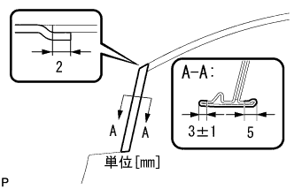 |
Apply new blackout tape to the position shown in the illustration.
| 5. Install Front Door Belt Moulding Assembly RH |
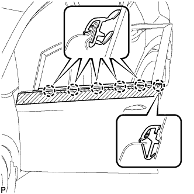 |
Engage the 6 claws to install the front door belt moulding assembly LH.
| 6. Install Front Door Weatherstrip RH |
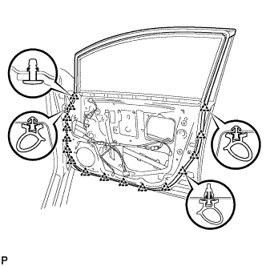 |
Engage the 16 clips to install the front door weatherstrip RH to the front door panel.
| 7. Install Front Door Check Assembly RH |
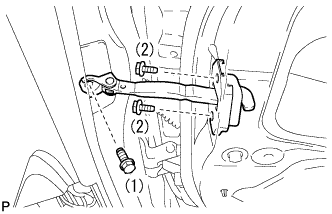 |
Install the front door check RH with the 3 bolts.
| 8. Install Door Electrical Key Oscillator |
 |
Install the door electrical key oscillator with the screw.
| 9. Install Front Door Lock Open Rod RH |
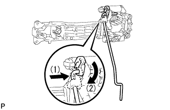 |
Following the procedure shown in the illustration, engage the front door outside handle snap to install the front door lock open rod RH to the front door outside handle frame RH.
| 10. Install Front Door Outside Handle Frame Sub-assembly RH |
 |
Connect the connector.
Engage claw (B).
Pull it toward the rear of the vehicle to engage claw (A), and temporarily install the front door outside handle frame RH to the front door panel.
Using a torx socket wrench T30, install the front door outside handle frame RH with the torx screw.
| 11. Install Front Door Inside Locking Cable Assembly RH |
 |
Install the front door inside locking cable RH to the front door lock assembly RH.
 |
Engage the 3 claws of the front door lock assembly RH.
| 12. Install Front Door Lock Remote Control Cable Assembly RH |
 |
Install the front door lock remote control cable RH to the front door lock assembly RH.
| 13. Install Front Door Lock Assembly RH |
Install a new door lock wire harness seal to the front door lock assembly RH.
 |
Insert the front door lock open rod RH into the front door lock assembly RH, and set it in the front door panel.
Using a torx socket wrench T30, install the front door lock assembly RH with the 3 torx screws.
| 14. Install Front Door Outside Handle Pad RR |
 |
Engage the 2 claws to install the front door outside handle pad RR.
| 15. Install Front Door Outside Handle Pad FR |
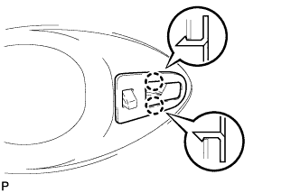 |
Engage the 2 claws to install the front door outside handle pad FR.
| 16. Install Front Door Outside Handle Assembly RH |
 |
Insert the rear end of the front door outside handle assembly RH into the front door outside handle frame RH.
Insert the front end of the front door outside handle assembly RH into the front door outside handle frame RH, and slide it toward the front of the vehicle to install it.
 |
Connect the connector.
| 17. Install Front Door Outside Handle Cover (Driver Side Door) |
 |
Engage the 2 claws to install the front door outside handle cover RH to the front door lock cylinder assembly.
| 18. Install Front Door Outside Handle Cover w/ Lock Cylinder Assembly (Driver Side Door) |
 |
Assemble the front door outside handle cover w/ lock cylinder assembly.
 |
Using a torx socket wrench T30, install the front door outside handle cover w/ lock cylinder assembly with the torx screw.
Install the hole plug.
| 19. Install Front Door Outside Handle Cover (Front Passenger Side Door) |
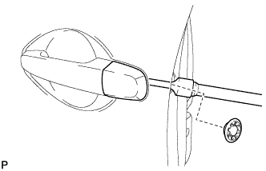 |
Using a torx socket wrench T30, install the front door outside handle cover LH with the torx screw.
Install the hole plug.
| 20. Install Front Door Frame Sub-assembly RR LWR RH |
 |
Install the front door frame RR LWR RH with the bolt.
| 21. Install Front Door Stiffener Cushion NO.1 |
Remove the double-sided tape remaining on the door.
Clean the adhesive surface with white gasoline.
Peel off the release paper of the double-sided tape without touching the adhesive surface.
 |
Insert the guide and attach new front door stiffener cushion No.1 with the double-sided tape.
Install front door stiffener cushion No.1 with the bolt.
| 22. Install Front Door Glass Run RH |
 |
Install the front door glass run RH to the front door panel.
| 23. Install Door Frame Garnish RH |
 |
Engage the clips to install a new door frame garnish RH.
| 24. Install Power Window Regulator Motor Assembly RH |
 |
Using a torx socket wrench T25, install the power window regulator motor assembly RH to the front door window regulator RH with the 3 torx screws.
| 25. Install Front Door Window Regulator w/ Motor Assembly |
Temporarily install the temporary bolt to the front door window regulator RH.
 |
Temporarily install the front door window regulator w/ motor assembly to the front door panel.
Install the front door window regulator w/ motor assembly with the 5 bolts and the temporary bolt.
Connect the power window regulator motor assembly RH connector.
| 26. Install Front Door Glass Sub-assembly RH |
Connect the battery negative terminal and power window regulator master switch assembly, and move the front door window regulator RH to a position where the installation position of the front door glass RH is visible.
Disconnect the battery negative terminal and power window regulator master switch assembly.
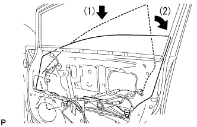 |
Temporarily install the front door glass RH to the front door window regulator RH in the order shown in the illustration.
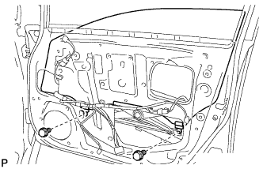 |
Install the front door glass RH with the 2 bolts.
| 27. Install Outer Rear View Mirror Assembly w/ Cover |
 |
Install the outer rear view mirror assembly w/ cover with the 3 bolts.
Connect the connector.
| 28. Install Outer Mirror Install Hole Cover RH |
| 29. Install Front Door Service Hole Cover RH |
Apply butyl tape to the door panel side.
Pass the front door lock remote control cable RH, rear door inside locking cable RH and each connector through a new front door service hole cover RH.
 |
Align a new front door service hole cover RH with the reference position on the front door panel and attach it.
Connect the connector.
| 30. Install Speaker Assembly FR NO.1 |
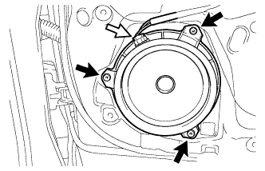 |
Install front speaker assembly NO.1 to the front door with 3 new rivets.
Connect the connector.
| 31. Install Front Door Glass Weatherstrip Inner RH |
 |
Install the front door glass weatherstrip inner RH to the front door panel.
| 32. Install Speaker Assembly FR NO.2 |
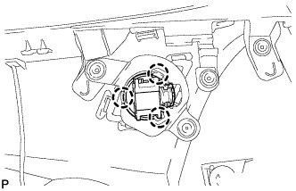 |
Engage the 3 claws to install speaker assembly FR NO.2.
| 33. Install Power Window Regulator Master Switch Assembly (Driver Side Door) |
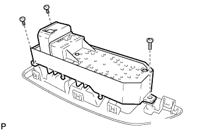 |
Install the power window regulator master switch assembly to the front armrest base panel UPR RH with the 3 screws.
| 34. Install Power Window Regulator Switch Assembly (Front Passenger Side Door) |
 |
Engage the 2 claws to install the power window regulator switch assembly to the front armrest base panel UPR LH.
| 35. Install Power Window Regulator Master Switch Assembly w/ Front Armrest Base Panel UPR RH |
 |
Engage the 7 claws to install the power window regulator master switch assembly w/ front armrest base panel UPR RH to the front door trim board RH.
| 36. Install Front Door Inside Handle Sub-assembly RH |
 |
Install the front door lock remote control cable RH and front door inside locking cable RH to the front door inside handle RH.
 |
Engage the 2 claws to install the front door inside handle RH to the front door trim board RH.
| 37. Install Front Door Trim Board Sub-assembly RH |
 |
Engage the 4 claws to install the front door trim board RH to the front door glass weatherstrip inner RH.
Engage the 9 clips to install the front door trim board RH to the front door panel.
 |
Install the 3 screws.
| 38. Install Door Assist Grip Cover RH |
 |
Engage the 4 claws to install the door assist grip cover RH to the front door trim board RH.
| 39. Install Front Door Inside Handle Bezel RH |
 |
Engage the 3 claws to install the front door inside handle bezel RH to the front door trim board RH.
| 40. Connect Battery Negative Terminal |
| 41. Setting Procedure When Disconnecting/Reconnecting Battery Terminal |
)| 42. Power Window Registration Setting |
)| 43. Inspect Power Window Operation |
)